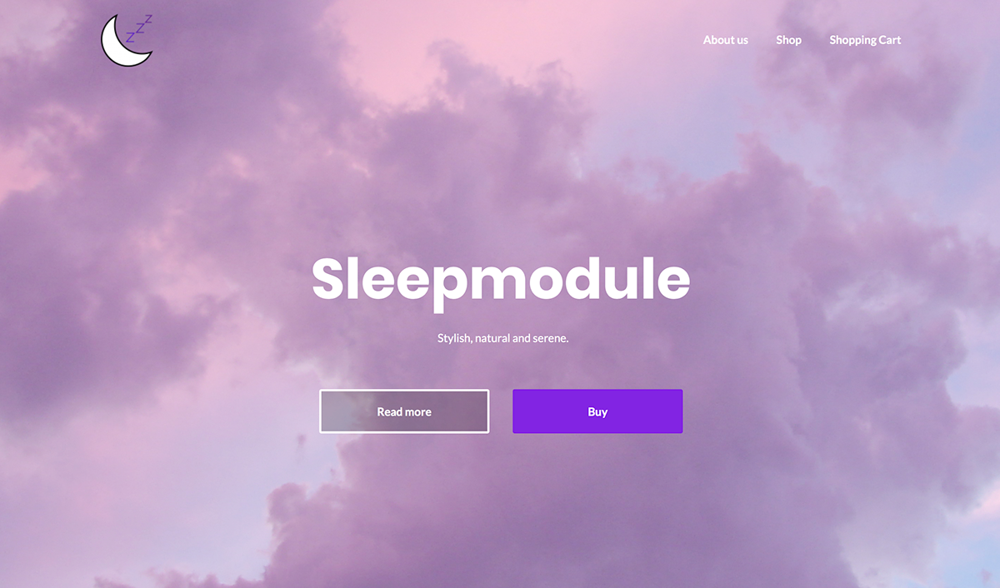
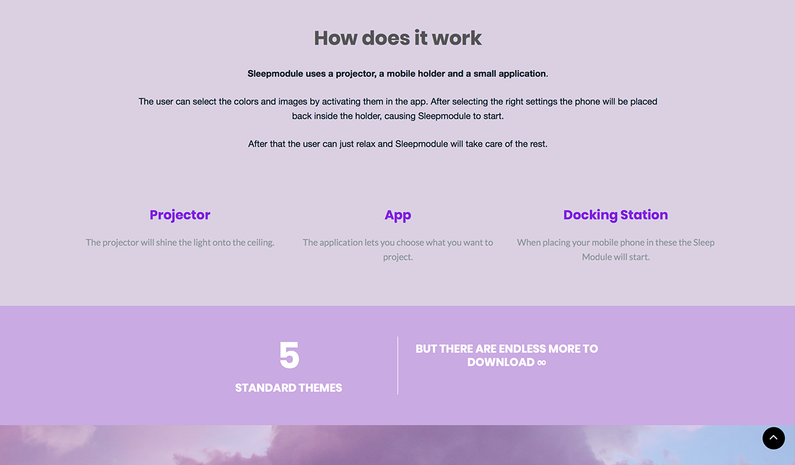
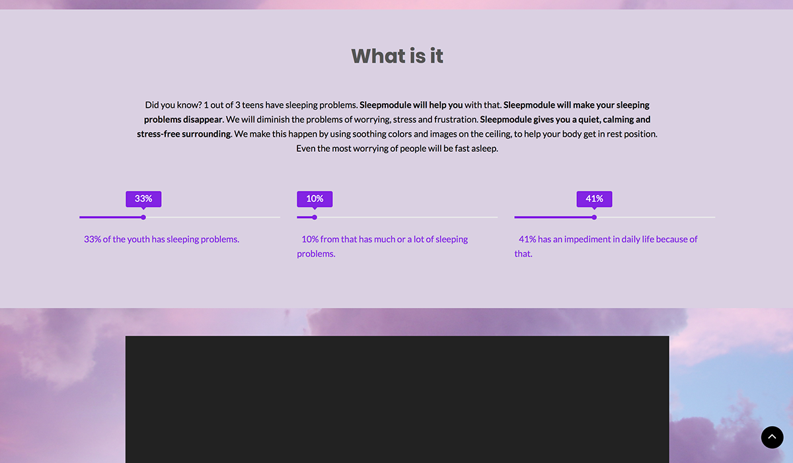
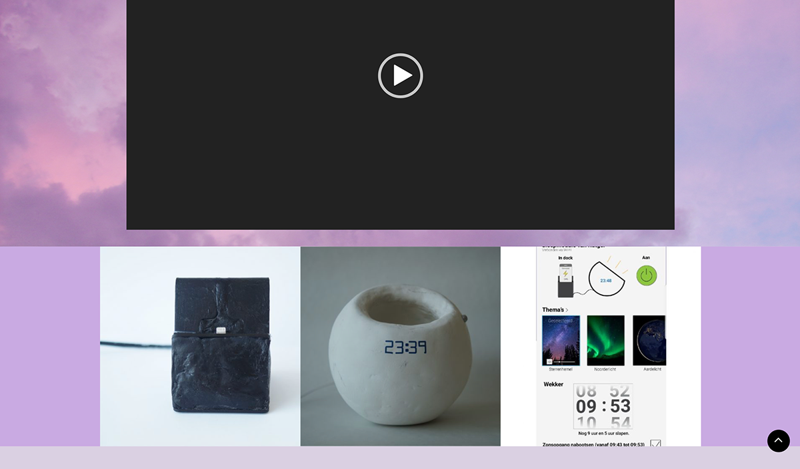
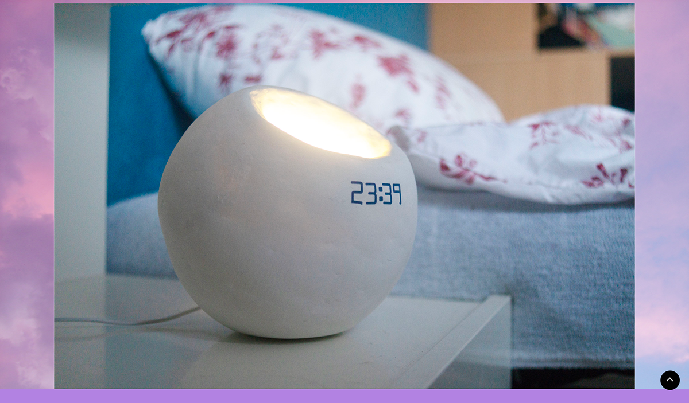
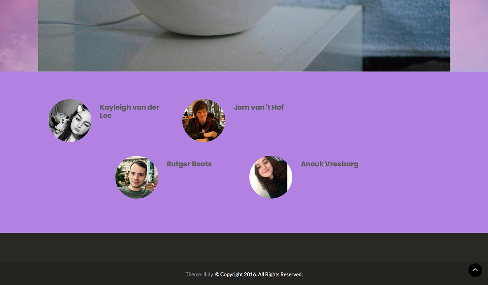

Assignment year 1: For the subject Project Sleep me and my team had to create a product, with a complete website and product video. After together creating the concept, I was given the roll of the website maker. This is where I first came into contact with Wordpress, which I really liked and still find a useful tool for web making today.
     